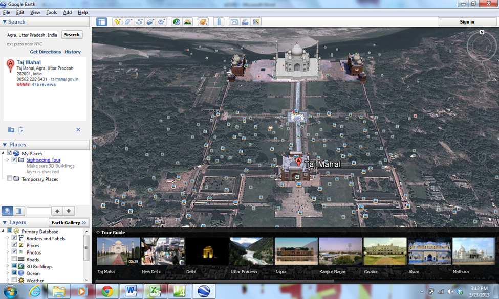
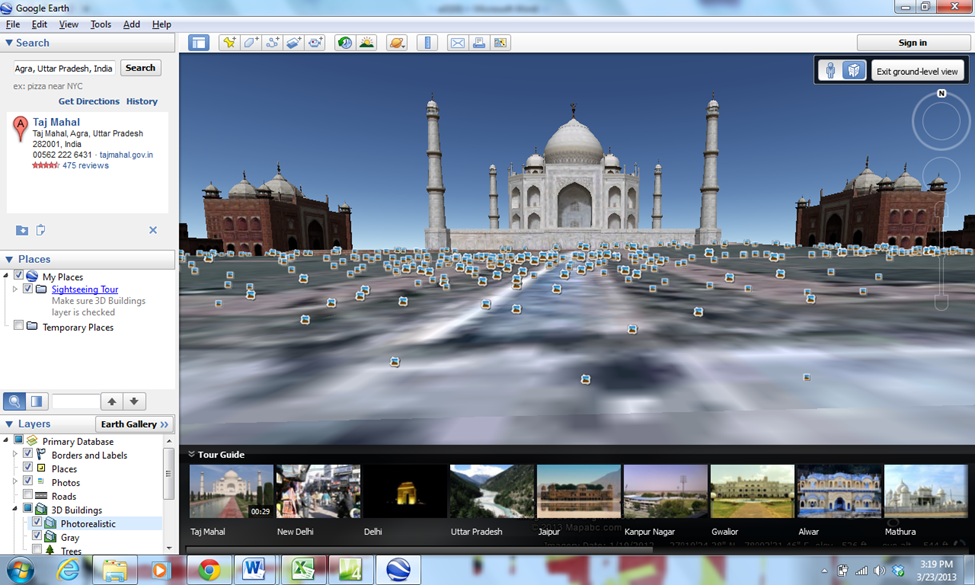
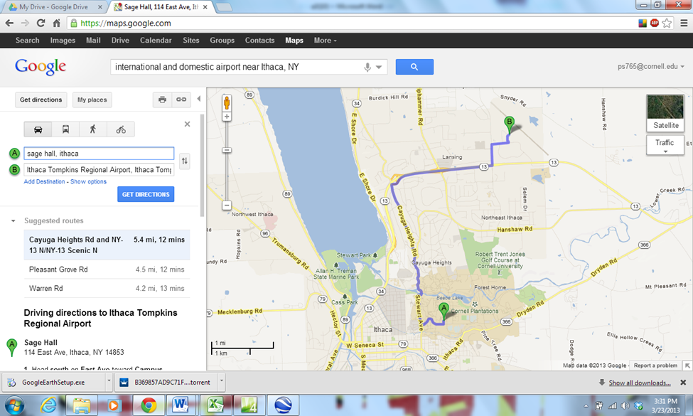
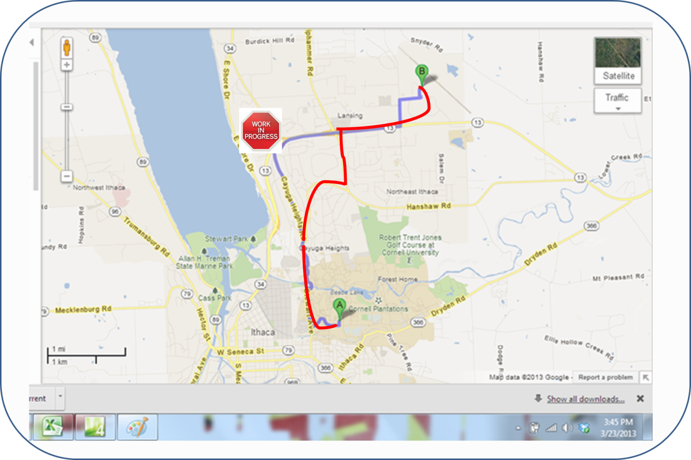
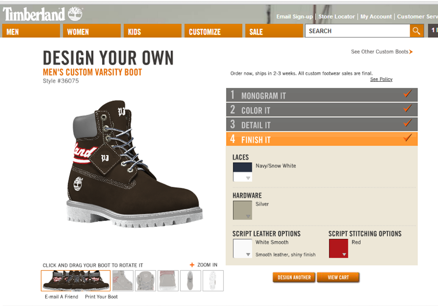

TransformIT
Building the future of IT
Assignment 3
Q1. a. Insert an
interactive button and a pop up message into your a3 page to
acknowledge customer actions and give directions. b.
Insert a video clip into your web page. Many are available on
youtube.com. Alternatively, insert background music to your web
page, so that music starts as soon as a visitor opens your page.
A1. a. An interactive button
is shown below.
Figure 1. an interactive button
b. A video clip is inserted as follows.
Figure 2. a video clip from YouTube
Q2. Use redirecting technology to change the
address of your web site to a catchy name, and redirect all
traffic coming into that address to your real site. Report your
new address on your web page, and provide a link to it.
A2. Answer begins here.
Q3. a. Insert a live TV
channel into your web page. b. Create an
infographic at
http://create.visual.ly and insert it into your web page.
A3. a. A live TV channel is as follows
Figure 3. a TV channel list
b. An infographic is as follows

create infographics with visual.ly
Figure 4. an infographic
Q4. a. Download the free
trial version of a 3D map viewer from
http://earth.google.com and get a satellite view of your
favorite park, restaurant, building, or commuting route. (We
recommend Grand Canyon). Copy the view to your web site. (We
recommend street view). b. Insert an RSS feed
into your web document. An RSS feed is content that is included
and formatted in your page, but automatically updated by another
source. Alternatively, create a personal Google home page by
using RSS feeds at
www.google.com/ig. Provide a link to your personal Google
page from your a3 page with your account name and password.
A4. a. A 3D map and its street view
are shown below.

Figure 5. the 3D map of Taj Mahal

Figure 6. the street view of Taj Mahal
b. An RSS feed is shown below.
Figure 7. the RSS feed of CNN.com
Q5. a. What properties
characterize Executive Information Systems (EIS)? b.
Read
the article on EIS, and explain why EIS dashboards are
appropriate for the CEO’s. c. From the same
article, explain how Verizon is using dashboards, containing
what information. d. How can you use EIS
dashboards in your business? What variables would you include?
A5. Answer begins here.
Q6. Browse an e-book at
http://library.books24x7.com or at
http://www.library.cornell.edu, or at
http://www.globusz.com. a. Briefly describe
what book you browsed. How can the quality of reading be
improved by using augmented reality? Give an example related to
that book. b. Ingram executives believe that
digital distribution of books is more important than online
reading. Describe how book distributors like Ingram can
accomplish digital distribution, without going into e-book
retail business. c. Why is Ingram not moving
more aggressively into digital distribution of physical books?
Could channel conflict be one of their concerns? Explain.
A6. Answer begins here.
Q7. a. Can sharing of a
digital product by consumers be beneficial to the sellers of
that product? List your reasons, and briefly explain. b.
Read the article titled “Disintermediating Cable TV”, and
explain how the comedian Louis C.K. is bypassing the TV
networks. Explain if any of the reasons you gave in part a apply
to him. c. Can site licenses benefit software
makers? Give one reason and briefly explain. d.
Explain if you would encourage sharing of your products in your
business and why. If you do not have digital products, give an
example of another business where sharing of a product by the
consumers may benefit the seller and explain why.
A7. Answer begins here.
Q8. a. Use Google Maps to
find the directions to a golf course in Ithaca from your address
(or the directions to some other business in some other city
from the airport). b. Take the Google
directions, and superimpose your own graphical directions on top
of it, to the same golf course (or another business), because
Google directions are often wrong due to construction or road
closures. Use image editor to highlight the route from your
house to that golf course (or some other route). Save the
modified map on your web page. c. Locate a
picture of the golf course (or other business) on the web. Copy
it to your web folder. Create an image link between the map and
the picture of the golf course (or your business), so that when
the users click on the golf course location on the map, they see
a picture of the golf course. Alternatively, instead of
a, b, and c above, do
a, b, and c
below. a. Signup for a photo management system
like flickr.com, slide.com, or picasa.com. Upload some of your
photos, and create an album or a slide show. b.
Provide a link to your album from your web page. c.
Geo-tag your photos. Geo-tagging involves hyperlinking each
photo to a specific location on a map, which shows where the
photo was taken. Hyperlinks can go in either direction.
A8. a. a Google Map direction
of Sage Hall is shown below.

Figure 8. a Google Map direction of a golf course in Ithaca
b. and c. the same map after being edited by using MS Paint accompanied with a hypertext link

Figure 9. the edited map
with a link to a picture
Q9. a. Go to
http://shop.timberland.com/category/index.jsp?categoryId=4238671
and design a custom made boot in their boot studio. List the
components of a boot that are customizable. Provide a
print-screen of your custom designed boot. Alternatively, go to
the visible world web site at
http://stream.visibleworld.com and design a customizable TV
ad. Explain how they combine video clips to customize the ad.
Provide a link to your customized ad, or provide a print-screen.
b. Insert a marquee (an animated scrolling
text) into your a3 page. Alternatively, insert a banner ad into
your a3 page. c. Explain why customization
maybe more important with digital goods than physical goods.
d. Explain how customized recommendations may
lead to the long tail phenomenon.
A9. a. A custom design of a boot. The
customizable features are: gender (men/women/kids), size,
embroidery, initials with specific font, colors (of leather
upper, collar, midsole, outsole, laces, hardware, script leather
option, script stitching option). The snapshot is as follows

Figure 10. the snapshot of a custom boot design
b. An example of marquee is shown below
c. Answer begins here.
d. Answer begins here.
Q10. a. Create a customized
radio station at www.pandora.com and provide a link to it, or
provide a screen shot of your customization. Use help at
http://help.pandora.com/customer/portal/articles/84831-create-a-station
Alternatively, create your own radio station at
www.last.fm/listen and broadcast music. Provide a link to
it, or provide a screenshot of your radio station. b.
Explain how Pandora or Lastfm receive feedback from you, and how
they find the music that is similar to what you like.
http://help.pandora.com/customer/portal/articles/182180-what-is-pandora
c. Read the article about Music in the Cloud,
and describe the difference between broadcasting music versus
merely acting as cloud storage service for music. Use the
difference between mp3 and mp3tunes to describe that difference
in copyright law. d. Describe the concept of
de-duplication and why mp3tunes can still be considered a
broadcaster and be legally liable under the copyright law
because of it.
A10. Answer begins here.
Q11. Insert an ad rotator into your web page
that randomly shows different ads every time at a predefined
frequency. Alternatively, register for Google Web Site Optimizer
at
https://www.google.com/accounts/ServiceLogin?service=websiteoptimizer&continue=http://www.google.com/analytics/siteopt/%3Fhl%3Den&hl=en.
Create a new version of your a3 page which starts with Question
3 instead of Question 1. Set the goal as playing the video of
Question 1 or some similar goal. Use the web site optimizer to
find out which version involved more playing of the video by
your users.
A11. Answer begins here.
Q12. a. Use the ANFY
multimedia development software to create an animation of your
own. Alternatively, create a surround video by using MS
Photosynth. You need to take multiple pictures of an item such
as a car, and upload them to Photosynth at
http://photosynth.net. Provide a link to your surround video
on your a3 page. b. Use Automatoon animation
tool to create a simple animation. Provide a link to your
animation.
A12. Answer begins here.
Q13. Insert a drill down search into your a3
document. Use your database from Assignment 2. Alternatively,
style your static data page from Assignment 2 using Cascading
Style Sheets so that it appears as a list of drop down lists,
rather than a table.
A13. Answer begins here.
Q14. a. Use MS Expression
Encoder to build a tutorial for how-to-do Question1-part-a above
by capturing the screen as you do the assignment. Include mouse
movements, and possibly audio, in the video of your screen
capture. Alternatively, download a free version of Demo Builder
7 from
http://demo-builder.com and create a tutorial video on
how-to-do part-a of this assignment. The tutorial will be a
series of flash video clips, each demonstrating one click of the
assignment. b. Insert an edited video into your
web page with scene shortcuts or captions or both.
Alternatively, add a clip to the beginning of your video such as
a commercial before inserting it into your web page.
A14. Answer begins here.
Instructions
This is a mock website for the course NBA 6010 - Electronic Commerce given by Prof. Levent V. Orman at Samuel Curtis Johnson Graduate School of Management, Sage Hall, Cornell University, Ithaca, NY 14853-6201.
Team Members:
Amrisha Sinha, Ching-han Yu, and Pranjal Sharma